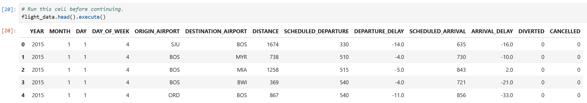
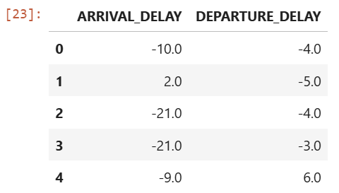
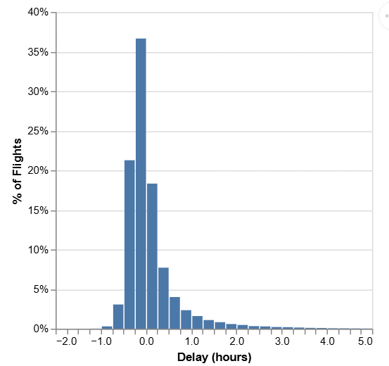
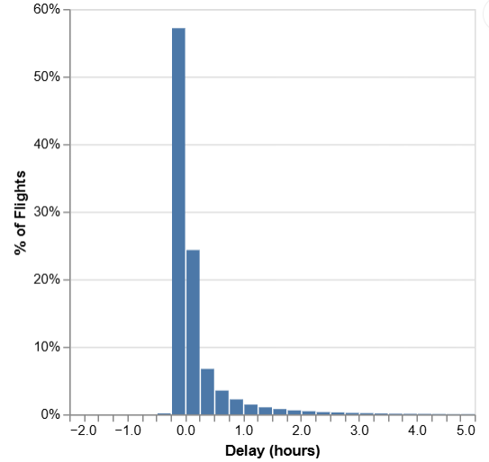

EECS690 Mini-Project 2b: Reading Data from a Database
Learning objectives: In this project, you will learn how to
ibis libraryAll datasets for this mini-project are placed in the Canvas folder called Data files. The dataset for this mini-project is called flights_filtered.db and is from a case study investigating the reliability of flights into and out of Boston Logan International Airport (the case study is at the bottom).
Tasks
1. Import ibis
2. Connect to the database
3. Create visualizations
Expected Deliverables
A file named foo.ipynb where foo is your last name in lower case letters. Your program should be reading and writing the data files in relative folder data/
Grading Rubric
Reproduce the above code and output: 20 points
Coding Hints
In order to open a database in Python, you need to take several steps:
1. Connect to the database. For an SQLite database, we will do that using the connect function from the sqlite backend in the ibis package. This command does not read in the data, but simply tells Python where the database is and opens up a communication channel that Python can use to send SQL commands to the database.
2. Check what tables (similar to pandas dataframes, Excel spreadsheets) are in the database using the list_tables function
3. Once you've picked a table, create a Python object for it using the table function from the conn object
4. You can then interact with this table using familiar commands like head or [] and don't forget to use execute to get back a pandas data frame
Some of the steps will be provided here.
Use the connect function from the sqlite backend in the ibis package to open and connect to the flights_filtered.db database in the data folder:
conn = ibis.sqlite.connect("data/flights_filtered.db")
Use the list_tables function to inspect the database stored in the engine to see what tables it contains. Make a new variable named flights_table_name that stores the name of the table with our data in it:
print(conn.list_tables()) flights_table_name = "bos_flights"
Use the table function from the conn object to create a Python reference to the table and call this flight_data:
flight_data = conn.table(flights_table_name)flight_data
The output should be as follows:
DatabaseTable: bos_flights YEAR int64 MONTH int64 DAY int64 DAY_OF_WEEK int64 ORIGIN_AIRPORT string DESTINATION_AIRPORT string DISTANCE int64 SCHEDULED_DEPARTURE int64 DEPARTURE_DELAY float64 SCHEDULED_ARRIVAL int64 ARRIVAL_DELAY float64 DIVERTED int64 CANCELLED int64
Now that we've connected to the database and created an pandas dataframe object, we'll take a look at the first few rows and columns of the flight on-time performance data. So let's try using the head function (which allows us to see the first few rows of a dataset) and see what happens:
flight_data.head()
The output should look like the following:
r0 := DatabaseTable: bos_flights YEAR int64 MONTH int64 DAY int64 DAY_OF_WEEK int64 ORIGIN_AIRPORT string DESTINATION_AIRPORT string DISTANCE int64 SCHEDULED_DEPARTURE int64 DEPARTURE_DELAY float64 SCHEDULED_ARRIVAL int64 ARRIVAL_DELAY float64 DIVERTED int64 CANCELLED int64
Limit[r0, n=5]
When we write flight_data.head().execute() in Python, in the background, the execute function is translating the Python code into SQL, sending that SQL to the database, and then translating the response for us:
flight_data.head().execute()
The output should look like the following:

Use [] to extract the arrival and departure delay columns for rows where the origin airport is BOS. This is done in two steps, first we filter rows and second, select columns:
fd_bos_origin = flight_data[flight_data["ORIGIN_AIRPORT"] == "BOS"].execute()delay_data = fd_bos_origin[["ARRIVAL_DELAY", "DEPARTURE_DELAY"]]
Take a look at delay_data to make sure it has the two columns we expect. The output should be as follows:

Our next task is to visualize our data to see whether there is a difference in delays for arrivals at and departures from BOS. But before we do that, let's figure out just how much data we're working with using the shape method.
delay_data.shape
The output should be: (104804, 2)
Plot the arrival delay time data as a histogram. You will plot the delay (in hours) separated into 15-minute-wide bins on the x-axis. The y-axis will show the percentage of flights departing BOS that had that amount of delay during 2015.
delay_data = delay_data.assign( ARRIVAL_DELAY_hr=delay_data["ARRIVAL_DELAY"] / 60)arrival_delay_plot = alt.Chart(delay_data).transform_joinaggregate( total="count(ARRIVAL_DELAY_hr)").transform_calculate( pct="1 / datum.total").mark_bar().encode( alt.X("ARRIVAL_DELAY_hr:Q") .bin(step=0.25, extent=[-2, 5]) .title("Delay (hours)"), alt.Y("sum(pct):Q") .axis(format="%") .title("% of Flights"))
The output should look like the following:

Plot the departure delay time data as a histogram with the same format as the previous plot. Hint: copy and paste your code from the previous block! The only thing that will change is the column from delay_data that you use for the x-axis:
delay_data = delay_data.assign( DEPARTURE_DELAY_hr = delay_data["DEPARTURE_DELAY"] / 60)
departure_delay_plot = alt.Chart(delay_data).transform_joinaggregate( total="count(DEPARTURE_DELAY_hr)").transform_calculate( pct="1 / datum.total").mark_bar().encode( alt.X("DEPARTURE_DELAY_hr:Q") .bin(step=0.25, extent=[-2, 5]) .title("Delay (hours)"), alt.Y("sum(pct):Q") .axis(format="%") .title("% of Flights"))departure_delay_plot
The output should look like the following:

Use the to_csv method to write the dataframe to a file called delay_data.csv. Save the file in the data/ folder and specify index=False to avoid including the numerical index in the file:
delay_data.to_csv("data/delay_data.csv", index=False)
Investigating the reliability of flights into and out of Boston Logan International Airport
Delays and cancellations seem to be an unavoidable risk of air travel. A missed connection, or hours spent waiting at the departure gate, might make you wonder, though: how reliable is air travel, really?
The US Bureau of Transportation Statistics keeps a continually-updated Airline On-Time Performance Dataset that has tracked the scheduled and actual departure / arrival time of flights in the United States from 1987 to the present day. In this section, we'll do some exploration of this data to try to answer some of the above questions. The actual data we'll be using was from only the year 2015, and was compiled into the 2015 Kaggle Flight Delays Dataset from the raw Bureau data. But even that dataset is too large to handle in this course (5.8 million flights in just one year!), so the data have been filtered down to flights that either depart or arrive at Logan International Airport (BOS), resulting in around 209,000 flight records.
Our data has the following variables (columns):